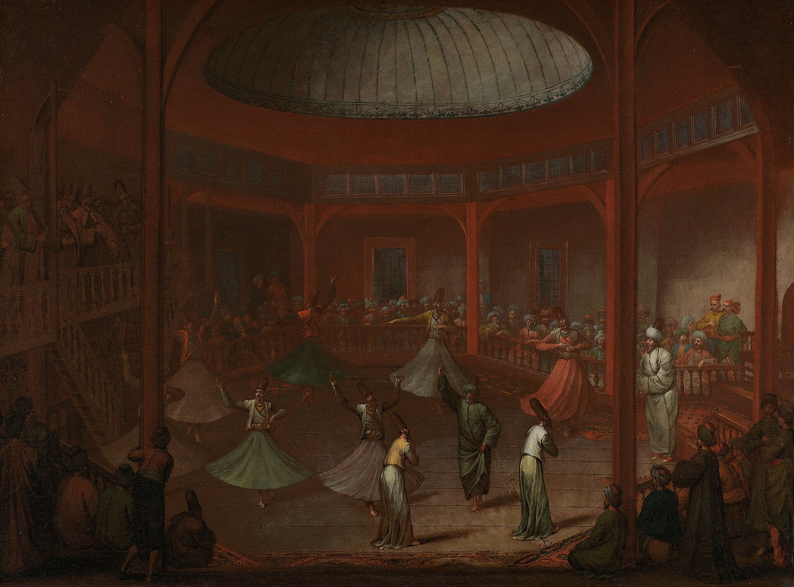

真一：差异存在，但不是最终的分离
鲁米不断使用“大海与波浪”“水缸与海”“太阳与光”等意象，让读者看见：局部真实并不等于孤立存在。波浪有自己的形状，却从未离开海。
这种语言在传统苏非框架中通常与 tawḥīd、神圣临在和受造物的依存关系相连。现代学者也会用“非二元”“一元论”等语言比较，但这些术语带有自己的哲学历史，不能直接替代鲁米的伊斯兰语境。
阅读钥匙：不是问“我是不是神”，而是问“我把自己想象成多么孤立的存在？”
RUMI'S THOUGHT · A RELATIONAL MAP
他的诗不断改变读者的位置：从局部到整体，从占有到关系，从“我知道”到“我愿意被改变”。爱、真一、心、小我、友谊、音乐与故事，不是彼此分开的主题，而是一张互相照亮的关系网。
本页不把鲁米抽离伊斯兰—苏非语境，也不把他锁死成教义说明书；同时区分传统苏非解释、现代学术重建与跨宗教比较阅读。

第一条原则
鲁米受过哈乃斐法学、古兰经、圣训与传统宗教学科训练。他祈祷、斋戒、布施，也长期讲道和教学；《玛斯纳维》大量使用古兰经人物与叙事。把这些背景删掉，鲁米会显得“更现代”，却也会失去大量比喻真正工作的语境。
鲁米的开放，并不是“所有信念都一样”。更接近他的，是：外在形式必须服务于内在真实；不同形式之下，人需要辨认它们是否把生命带向真理、爱、谦卑与更深的看见。
九条思想轴
每一条都不是抽象命题，而会在诗中变成芦笛、镜子、大海、火、酒、鸟、花园、太阳，以及一个又一个被打断的故事。
鲁米不断使用“大海与波浪”“水缸与海”“太阳与光”等意象，让读者看见：局部真实并不等于孤立存在。波浪有自己的形状，却从未离开海。
这种语言在传统苏非框架中通常与 tawḥīd、神圣临在和受造物的依存关系相连。现代学者也会用“非二元”“一元论”等语言比较，但这些术语带有自己的哲学历史，不能直接替代鲁米的伊斯兰语境。
鲁米的爱会“烧”“煮沸”“使铜成金”“使死者复生”。这类语言的重点不在甜蜜，而在变化：爱让旧有身份失去稳定，让人的注意力从占有转向被爱本身。
沙姆斯出现之后，鲁米原有的修行没有被取消，而是被一种更富喜悦、诗性与音乐性的表达重新点燃。Lewis把这理解为从严格的克己进一步走向“爱的元灵性”。
“心镜”是鲁米最重要的意象之一。镜子会生锈、会被灰尘覆盖，也能被不断研磨。它关心的不是“我感觉好不好”，而是“我还能不能如实地看见”。
因此，伦理行为、注意力与修行都在改变“心的反射能力”。鲁米把恶习写成铁锈，把克制写成磨镜，把澄明写成水静下来后重新映出月亮。
nafs 常被简单译成“小我”“私欲”或“自我”。在鲁米那里，它更像一套不断把世界拉回“我想要、我害怕、我比别人好”的自动机制。
因此鲁米会用驴、贪吃者、醉汉、猎手、狐狸等极具喜剧感的角色让读者看见自己。真正危险的不是有缺陷，而是“自认完美”，因为那会让学习停止。
现代中文很容易把 fanāʾ 浪漫化成“自我消失”。更稳妥的理解是：某种自我中心的主张、占有与独立幻觉被削弱，从而让人以更大的关系重新存在。
“水缸与大海相通”比“水滴彻底不存在”更能说明鲁米的复杂性：有限仍在，但它不再把自己理解成与源头隔绝的实体。
沙姆斯、萨拉丁、霍萨姆丁并不是鲁米人生中的替换零件。他们分别让关系呈现出挑战、陪伴、倾听与共同创作的不同形态。
《沙姆斯言谈录》尤其提醒我们：沙姆斯有自己的声音、判断与锋利，不只是为了成就鲁米而存在。精神关系真正的力量来自互相改变。
samāʿ 的字面核心首先是“听”。沙姆斯之后，诗歌、音乐、节奏与舞动在鲁米的公开精神生活中更突出，但把鲁米思想缩减成“旋转舞”同样是一种误读。
后世梅夫列维教团把仪式进一步制度化。今天我们看到的服饰、音乐程序与舞台形式，是数代人共同形成的传统。
《玛斯纳维》会突然离题、故事套故事、讲到一半转成经文、笑话或伦理提醒。它不是结构失控，而是一种教学方式：让读者看到自己的理解习惯怎样急着抓住一个结论。
“黑屋里的大象”就不是一句“每个人都有自己的真理”。鲁米真正说的是：每个人摸到的局部都有限；如果有光，争论的条件会被改变。
鲁米没有退出社会成为隐士。他教学、写信、回应官员和弟子、关心共同体，也处理现实的人际冲突。最深的体验最终要回到“如何生活”。
因此本站的内在探索不会停在“我获得了一个美丽感受”。最后一问总是：这会怎样改变我今天说话、工作、爱人、拒绝、给予和承担的方式？

思想如何变成诗
这些不是固定密码。鲁米会让同一个意象在不同故事里改变功能，所以诗歌数据库会同时记录“意象”与“它在这段诗里做了什么”。
三条解释边界
问题在于：鲁米大量借用古兰经人物、圣训、祈祷、斋戒、法学语言。删掉这些，许多比喻会只剩情绪。更好的方式是：先理解传统，再讨论其开放性。
爱者 / 被爱者可以进入人际经验，但它们在鲁米诗里经常同时指向神圣、导师、朋友、灵魂、真理与语言自身。不能只保留浪漫恋爱这一层。
跨传统比较很有启发性，但“Vedānta / Buddhism / nondualism”等是后设解释框架。网站会展示这些研究，同时把它们与伊斯兰苏非传统内的解释并列，而不互相替代。


从思想进入诗歌
当前诗歌数据库已经把“主题”进一步拆成：意象、象征、比喻机制、语境、内在探索问题。你可以从“镜子”一路看到心的澄明，从“大海”看到局部与整体，也可以观察“火”为什么在不同段落里既代表爱，又代表欲望。
研究依据
用于历史、伊斯兰学术背景、沙姆斯前后变化、samāʿ、作品年代与现代鲁米接受史的基本校准。
思想不单靠二手概括，而从“芦笛、镜子、大海、火、笼中鸟、黑屋大象、乌云与水槽”等具体诗段反推其运作方式。
用于理解伙伴关系、精神教师、相遇与鲁米转化，不把沙姆斯处理成一个神秘符号。
作为中文研究和“神爱、完人、灵魂、审美”等议题的参考，同时与 Lewis、Vaziri 等不同解释保持区分。